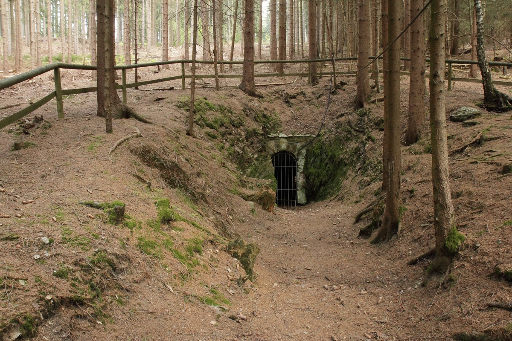

Schmutzlerzeche
Useful Information
| Location: | Goldberg near Goldkronach. |
| Open: |
MAY to SEP Sun 11-17. OCT to MAR closed for bat protection. [2011] |
| Fee: |
Adults EUR 1.50, Children (12-16) EUR 0.50, Children (0-11) free. [2011] |
| Classification: |
 Gold Mine Gold Mine
|
| Light: | electric |
| Dimension: | |
| Guided tours: | |
| Photography: | |
| Accessibility: | |
| Bibliography: | |
| Address: |
Besucherbergwerk "Schmutzlerzeche", Am Goldberg, 95497 Goldkronach, Tel: +49-9273-9841.
E-mail: Touristinfo, Marktplatz 2, 95497 Goldkronach, Tel: +49-9273-9840, Fax: +49-9273-96380. E-mail: |
| As far as we know this information was accurate when it was published (see years in brackets), but may have changed since then. Please check rates and details directly with the companies in question if you need more recent info. |
|
History
| ~1400 | first mentioned. |
| 1607 | Grubenbericht (mine report). |
| 1718 | Grubenbericht (mine report). |
| 1981 | developed as a show mine. |
| 1985 | opened to the public. |
| 1993 | closed due to staff shortage. |
| 1993 | restored by volunteers and reopened. |
Geology
|  |
| Image: Mittlerer Schmutzler Stollen. Public Domain. |
{kind=link}
The main dyke is running from north to south through the Goldberg, from the village Brandholz to the village Goldkronach. The gold bearing dykes are quartz surrounded by phylittic clay slate, diabas dykes and hyllitic gneiss. The gold ore is gold bearing pyrite (FeS2) with a gold content of 400g to 1kg gold per ton ore. The dyke contains a nuber of other minerals.
Description
This mine is named Grube "Schmutzler" (Schmutzler mine), but also Schmutzlerstollen (Schmutzler tunnel) or Schmutzlerzeche (Schmutzler pit). It is located west of Goldkronach on the Goldberg. It is reached on the Alexander-von-Humboldt-Lehrpfad, a trail dedicated to Alexander von Humboldt which connect 40 historic mining sites. The show mine is located at the former Mittlerer Stollen (middle tunnel) of the mine, which was opened to the public by volunteers. It is possible to see 35m of the tunnel.
The mine is operated since the Middle Ages. it is first mentioned around 1400. At this time it was known under the name shmutzhart. The tunnel still shows the traces of the manual work of the medieval miners and an outcrop of the gold bearing quartz dyke. This dyke contained golt ore with an amount of 20g to 50g gold per hundredweight ore.
- See also
 Search Google for "Schmutzlerzeche"
Search Google for "Schmutzlerzeche" Google Earth Placemark
Google Earth Placemark Schmutzlerzeche
(visited: 28-JUL-2011)
official website.
(
Schmutzlerzeche
(visited: 28-JUL-2011)
official website.
( )
)- Freizeit
(visited: 29-JUL-2011)
()
- Subterranean musea: Besucherbergwerk Schmutzlerzeche
(visited: 29-JUL-2011)
- Besucherbergwerk Schmutzlerstollen
(visited: 29-JUL-2011)
()
- Mineralienatlas Lexikon - Deutschland/Bayern/Fichtelgebirge/Goldkronach/Brandholz/Schmutzler Gang
(visited: 29-JUL-2011)
()